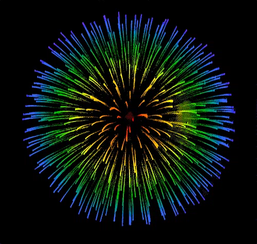

<!--
  Generated template for the BraveYesPage page.

  See http://ionicframework.com/docs/components/#navigation for more info on
  Ionic pages and navigation.
-->
<ion-header>
  <ion-navbar>
    <ion-title></ion-title>
  </ion-navbar>
</ion-header>

<ion-content padding>
    <h1 class="ami-heading">Great Job!</h1>
    

    <h4>{{message}}</h4>

</ion-content>

<ion-footer>
  <ion-toolbar>
      <button ion-button block (click)="goHome()">Back To Home</button>
  </ion-toolbar>
</ion-footer>
